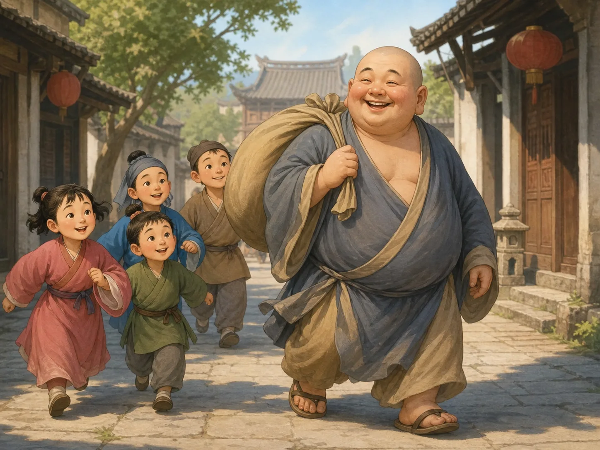

笑和尚和他的大布袋
The Smiling Monk and His Big Cloth Bag
Page 1
一张笑脸，一只大布袋
A Big Smile and a Big Bag
In many Chinese Buddhist temples, visitors see Budai-Maitreya smiling beside his cloth bag.
走进一些中国佛教寺院，你很快就会看到一张大大的笑脸。他光着头，穿着宽松的僧衣，肚子圆圆的，身边还常常放着一只鼓鼓的大布袋。
有人叫他“笑佛”，也有人叫他“Mílè · 佛教中的未来佛，在中国常和笑口常开的布袋和尚形象联系起来。佛”。不过，这副亲切的模样来自大约一千年前的一位中国和尚。他叫契此，却因为总带着一只布袋，人们更喜欢叫他“布袋和尚”。
一个和尚为什么会因为一只袋子，被人记住这么久呢？
Walk into some Chinese Buddhist temples, and you may soon meet a huge smile. The figure is bald and wears a loose monk’s robe. His belly is round, and a bulging cloth bag often rests beside him.
Some people call him the “Laughing Buddha.” Others call him Mílè · 弥勒 · The future Buddha, often connected in China with the smiling Cloth-Bag Monk. Buddha. Yet this friendly face came from a Chinese monk who lived about a thousand years ago. His name was Qici, but he carried a cloth bag so often that people remembered him as Budai—the Cloth-Bag Monk.
How did one bag make a wandering monk famous for so long?
Page 2
背着袋子走街串巷
The Monk in the Marketplace

Budai walks through the marketplace with his big cloth bag as laughing children follow along.
布袋和尚常背着大布袋，走进热闹的街市。他向人要一点食物，吃上一口，还会留下一小份放进袋子里。袋中没有一张神奇宝物清单，较早的传记只说，里面装着他路上需要的各种东西。
他没有漂亮的马车，也不讲究睡在哪里。走累了，他找个地方便能躺下休息。人们远远看见肩头那个晃来晃去的大布袋，就知道是他来了。
他的模样并不严肃，也不让人觉得难以靠近。圆圆的身体、宽大的衣服和笑眯眯的脸，让他显得格外亲切。后来的画家还常常在他身边画上一群玩耍的孩子。
Budai carried his big cloth bag as he wandered through busy marketplaces. He asked for a little food, ate some, and tucked a small portion into his bag. The earliest account does not give us a list of magical treasures. It simply says that he carried the everyday things he needed.
He had no fine carriage, and he did not worry much about where he slept. When he was tired, he found a spot and rested. People could see the big bag swinging from his shoulder and know that Budai was coming.
He did not look stern or hard to approach. His round shape, loose robe, and cheerful face made him seem friendly. Later artists often painted playful children around him.
Page 3
穿在脚上的天气预报
A Weather Report on His Feet
人们渐渐讲起了许多关于布袋和尚的奇妙故事。镇上的人想知道天气时，会先看看他脚上穿了什么。
天气晴朗干燥时，他会穿着高高的木鞋，坐在桥上休息。人们看见他穿着湿草鞋走过，就知道雨水要来了。他的鞋简直成了一份会走路的天气预报。
还有一个故事说，他曾在雪地里睡觉，第二天身上竟没有一点积雪。这些奇事今天已经无法查证。不过，它们让那个背着布袋走过街市的和尚，变成了一个让人一听就忘不了的传奇人物。
Before long, people began telling wonderful stories about Budai. When people in town wondered about the weather, they watched what he wore on his feet.
On bright, dry days, he wore tall wooden shoes and rested on a bridge. When he walked by in wet straw sandals, people knew rain was coming. His shoes became a walking weather report.
Another tale says that Budai once slept outside in the snow. By morning, not one snowflake had settled on him. No one today can check whether these wonders really happened. But they turned the monk with the swinging bag into someone people would not forget.
Page 4
布袋和尚怎么成了弥勒？
How Did Budai Become Maitreya?
早在布袋和尚出生以前，佛教里就有了弥勒。佛教徒相信，弥勒会在遥远的未来来到人间，成为一位佛，继续教导人们。早期的弥勒像大多很庄严，并没有圆肚子和大布袋。
可是，一部古代和尚传记收录了一首短诗，诗里把契此称为弥勒。后来，人们开始相信，布袋和尚就是弥勒变成普通和尚，来到人间走了一趟。
就这样，两个形象慢慢合在了一起：一个是佛教中未来的佛，一个是中国街市里背着布袋的笑和尚。所以在中国，弥勒常常有布袋和尚的圆肚子、大笑脸和大布袋；在其他地方，他的样子可能完全不同。
Maitreya was part of Buddhism long before Budai was born. Buddhists believe that Maitreya will come to the human world in the distant future, become a buddha, and teach people. Early images of Maitreya looked grand and serious. They did not have Budai’s round belly or cloth bag.
But an old book about monks includes a short poem that calls Qici “Maitreya.” People later came to believe that Budai was Maitreya in disguise, walking through the human world as an ordinary monk.
Little by little, two figures joined together: the future buddha and the smiling Chinese monk from the marketplace. That is why Maitreya often has Budai’s round belly, huge grin, and cloth bag in China. In other places, Maitreya may look completely different.
Page 5
他为什么站在寺院门口？
Why Is He Near the Temple Door?
许多中国佛教寺院把布袋弥勒像放在靠近入口的大殿里。来访的人还没有走进更深的院落，就先遇见这张笑脸。
随着布袋和尚的形象越传越广，他身上的每个特点都有了新的意思。笑脸代表快乐和亲切，大布袋代表分享和好运。他那副轻松自在的模样，也让人想到耐心和宽容。这些意思经过很多代人，才一点一点形成。
于是，一个背着布袋、四处行走的和尚，慢慢成了中国寺院里最亲切的面孔之一。他不需要板着脸，也不用说一句话。那只大布袋和灿烂的笑容，已经代表了人们对快乐、宽容和美好生活的希望。
Many Chinese Buddhist temples place Budai-Maitreya in a hall near the entrance. Before visitors reach the deeper courtyards, they meet his smile.
As Budai’s image spread, each part of it took on a special meaning. His smile stood for joy and welcome. His bag stood for sharing and good luck. His round, easygoing figure made people think of patience and a generous heart. These meanings grew over many generations.
And so, a wandering monk with a cloth bag became one of the friendliest faces in a Chinese temple. He does not need a stern face or a long speech. His enormous bag and bright smile still stand for happiness, patience, and the hope for a good life.